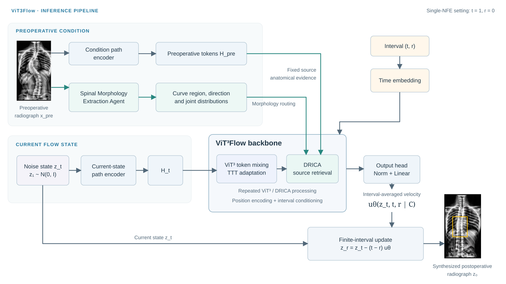
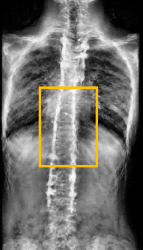
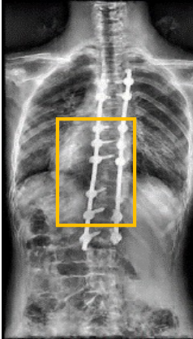
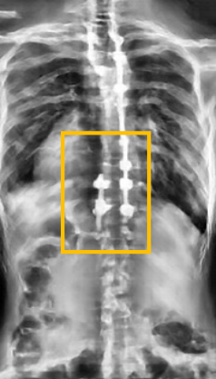
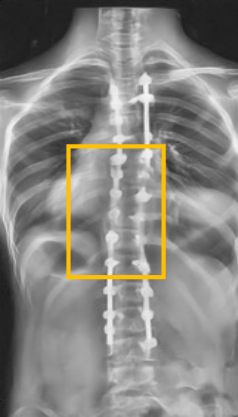

Adapt to the individual
Case-specific adaptation responds to the anatomy and deformity pattern of each patient.
The University of Hong Kong · HKUST (Guangzhou) · CUHK · Shandong University
* Equal contribution
Anticipating postoperative spinal morphology could support individualized scoliosis surgical planning. ViT3Flow synthesizes postoperative whole-spine radiographs from preoperative images, combining patient-specific adaptation with morphology-guided retrieval of anatomical evidence. The study introduces ScoliSurg, a dataset of 632 paired preoperative–postoperative radiographs.
ScoliSurg · Paired evidence of surgical correction
We introduce ScoliSurg, a dataset of 632 matched preoperative–postoperative standing whole-spine radiograph pairs from patients undergoing scoliosis corrective surgery. The cohort was retrospectively collected at Queen Mary Hospital and Duchess of Kent Children’s Hospital in Hong Kong between October 2023 and August 2025, alongside demographic information and clinical diagnostic records.
Two senior spine surgeons screened every pair for image quality, patient-level correspondence, comparable anatomical coverage, and reliable postoperative assessment. The dataset covers thoracic, lumbar, thoracolumbar, and mixed curve patterns. Its contribution is to connect the same patient’s anatomy before and after surgical correction, providing paired supervision for postoperative image synthesis and a common basis for evaluating image quality and clinically relevant spinal geometry.
Paper-grounded inference flow: preoperative anatomy and morphology condition the current-state token stream, followed by interval-averaged velocity prediction and a single finite-interval update.

The same patient, shown across all methods. Compare correction patterns, fixation regions, and surrounding anatomy.




Scroll horizontally to view all methods. The case buttons above update every method together. Results reproduced from Figure 5 of the manuscript.
Case-specific adaptation responds to the anatomy and deformity pattern of each patient.
Morphology-guided retrieval retains access to spatially corresponding preoperative anatomy.
Conditional MeanFlow supports finite-interval generative transport in a single evaluation.
ScoliSurg · 632 paired radiographs
Paper, implementation, checkpoints, and dataset access information will be added progressively.